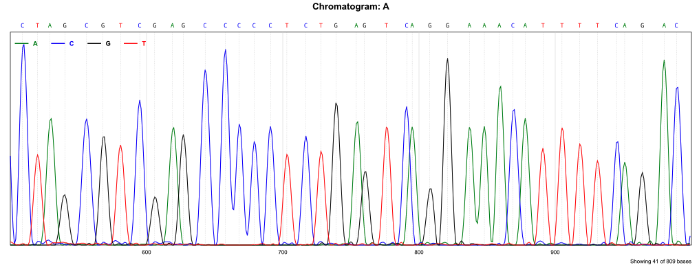

ABIF tools for Nim


nim-abif is a Nim library and command-line toolkit for ABIF
(Applied Biosystems Information Format) files from Sanger capillary
sequencing instruments.
Features
- Parse
.ab1and.fsatrace files - Extract sequences, quality values, sample names, and metadata tags
- Export traces to FASTA and FASTQ formats
- Trim low-quality bases and merge paired forward/reverse traces
- Render chromatograms as SVG images
- Screen hotspot panels and write CSV, VCF, and HTML reports
Tools
Convert ABIF trace files to FASTQ, with optional quality trimming.
- Convert ABIF trace files to FASTQ format
- Trim low-quality bases from sequence ends
- Configure sliding window size and quality threshold
- Output to STDOUT or to a file
Usage examples
abi2fq trace.ab1 output.fq
abi2fq --window=15 --quality=25 trace.ab1 output.fq
abi2fq --no-trim trace.ab1 output.fq
Render ABIF traces as SVG chromatograms for inspection or reports.

The output can be in HTML format and SVG format.
{kind=link}
Batch hotspot mutation screening across many .ab1 traces. It aligns each trace against a reference panel, classifies the hotspot state, and writes CSV, VCF, and HTML reports with chromatogram evidence.
Validation datasets
The test suite includes real AB1 datasets used for regression and validation checks.
Installation
Install with Nimble:
Or install the packaged command-line tools from Bioconda: